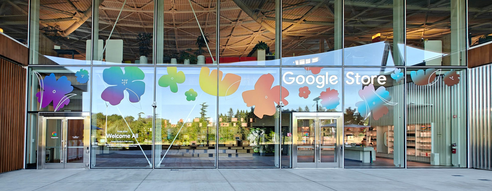
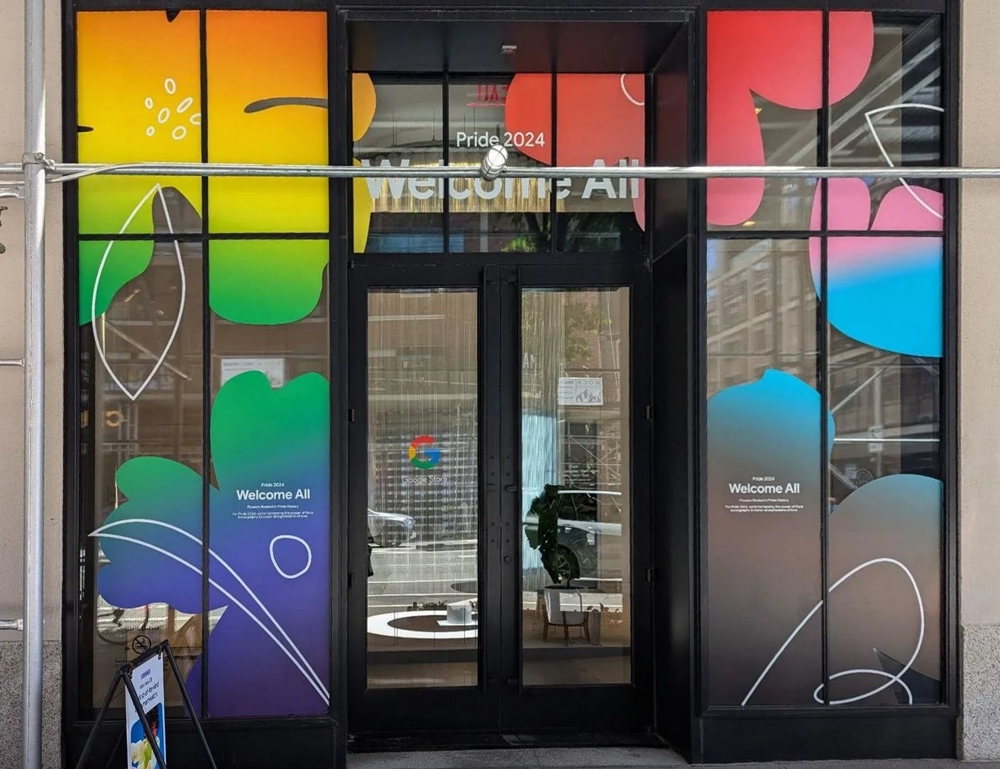
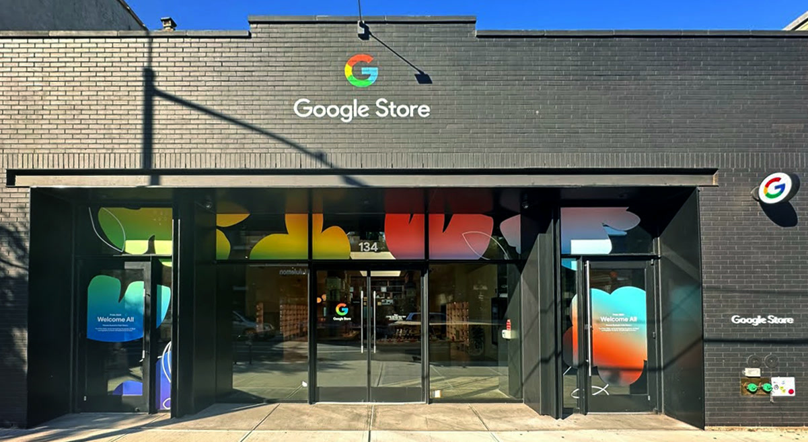

A floral identity for Pride across Google Store. One system of flowers, rooted in Pride history, scaled to every window.
The identity is built entirely from flowers. Each bloom is a soft gradient shape pulled across the full spectrum, and each one carries a piece of Pride history.
One drawing language held the whole program together, from the in-store screens to the glass on the street.


Most Pride retail reaches for the flag. We went to the garden.
Applied as window graphics across Google Store locations, the system filled glass facades from sidewalk to ceiling.
Same language at every store, from the flagship to the neighborhood shop.
Door screen · in-store motion · 13s loop
Five short films, one per bloom, each pairing the gradient flower with the Pride history behind it. Quiet, looping, no sound.
A token of love between women since Sappho.
Shorthand for queer identity for over a century.
A slur, reclaimed into a symbol.
Oscar Wilde's green carnation, worn as a signal.
The oldest language of love, meant for everyone.